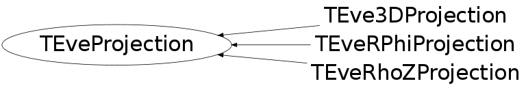

Function Members (Methods)
This is an abstract class, constructors will not be documented.
Look at the header to check for available constructors.
public:
protected:
| void | PreScaleVariable(Int_t dim, Float_t& v) |
Data Members
public:
| enum EPType_e { | kPT_Unknown | |
| kPT_RPhi | ||
| kPT_RhoZ | ||
| kPT_3D | ||
| kPT_End | ||
| }; | ||
| enum EPProc_e { | kPP_Plane | |
| kPP_Distort | ||
| kPP_Full | ||
| }; | ||
| enum EGeoMode_e { | kGM_Unknown | |
| kGM_Polygons | ||
| kGM_Segments | ||
| }; |
public:
| static Float_t | fgEps | resolution of projected points |
| static Float_t | fgEpsSqr | square of resolution of projected points |
protected:
| TEveVector | fCenter | center of distortionprivate: |
| bool | fDisplaceOrigin | displace point before projection |
| Float_t | fDistortion | distortion |
| Float_t | fFixR | radius from which scaling remains constant |
| Float_t | fFixZ | z-coordinate from which scaling remains constant |
| TEveProjection::EGeoMode_e | fGeoMode | strategy of polygon projection (what to try first) |
| Float_t | fMaxTrackStep | maximum distance between two points on a track |
| TString | fName | name |
| Float_t | fPastFixRFac | relative scaling factor beyond fFixR as 10^x |
| Float_t | fPastFixRScale | relative scaling beyond fFixR |
| Float_t | fPastFixZFac | relative scaling factor beyond fFixZ as 10^x |
| Float_t | fPastFixZScale | relative scaling beyond fFixZ |
| vector<TEveProjection::PreScaleEntry_t,allocator<TEveProjection::PreScaleEntry_t> > | fPreScales[3] | scaling before the distortion |
| Float_t | fScaleR | scale factor to keep projected radius at fFixR fixed |
| Float_t | fScaleZ | scale factor to keep projected z-coordinate at fFixZ fixed |
| TEveProjection::EPType_e | fType | type |
| Bool_t | fUsePreScale | use pre-scaling |
Class Charts
{kind=link}
{kind=link}
{kind=link}
{kind=link}

Function documentation
void ProjectPointdv(Double_t* v, Float_t d)
Project double array. This is a bit piggish as we convert the doubles to floats and back.
void ProjectPointfv(const TEveTrans* t, const Float_t* p, Float_t* v, Float_t d)
Project float array, converting it to global coordinate system first if transformation matrix is set.
void ProjectPointdv(const TEveTrans* t, const Double_t* p, Double_t* v, Float_t d)
Project double array, converting it to global coordinate system first if transformation matrix is set. This is a bit piggish as we convert the doubles to floats and back.
void ProjectVector(const TEveTrans* t, TEveVector& v, Float_t d)
Project TEveVector, converting it to global coordinate system first if transformation matrix is set.
void PreScalePoint(Float_t& x, Float_t& y)
Pre-scale point (x, y) in projected coordinates for 2D projections: RhoZ ~ (rho, z) RPhi ~ (r, phi), scaling phi doesn't make much sense.
void PreScalePoint(Float_t& x, Float_t& y, Float_t& z)
Pre-scale point (x, y, z) in projected coordinates for 3D projection.
void AddPreScaleEntry(Int_t coord, Float_t max_val, Float_t scale)
Add new scaling range for given coordinate. Arguments: coord 0 ~ x, 1 ~ y, 2 ~ z value value of input coordinate from which to apply this scale; scale the scale to apply from value onwards. NOTE: If pre-scaling is combined with center-displaced then the scale of the central region should be 1. This limitation can be removed but will cost CPU.
void ChangePreScaleEntry(Int_t coord, Int_t entry, Float_t new_scale)
Change scale for given entry and coordinate. NOTE: If the first entry you created used other value than 0, one entry (covering range from 0 to this value) was created automatically.
void SetDisplaceOrigin(bool )
Set flag to displace for center. This options is useful if want to have projected center at (0, 0) position in projected coordinates and want to dismiss gap around projected center in RhoZ projection.
void BisectBreakPoint(TEveVector& vL, TEveVector& vR, Float_t eps_sqr)
Find break-point on both sides of the discontinuity. They still need to be projected after the call. This is an obsolete version of the method that required manual specification of precision -- this lead to (infrequent) infinite loops.
void BisectBreakPoint(TEveVector& vL, TEveVector& vR, Bool_t project_result = kFALSE, Float_t depth = 0)
Find break-point on both sides of the discontinuity. If project_result is true, the resulting break points will be projected with given depth value.
void SetDirectionalVector(Int_t screenAxis, TEveVector& vec)
Get vector for axis in a projected space.
Float_t GetScreenVal(Int_t i, Float_t x, TEveVector& dirVec, TEveVector& oCenter)
Project point on given axis and return projected value.
Float_t GetScreenVal(Int_t ax, Float_t value)
Project point on given axis and return projected value.
void ProjectPoint(Float_t& x, Float_t& y, Float_t& z, Float_t d, TEveProjection::EPProc_e p = kPP_Full)